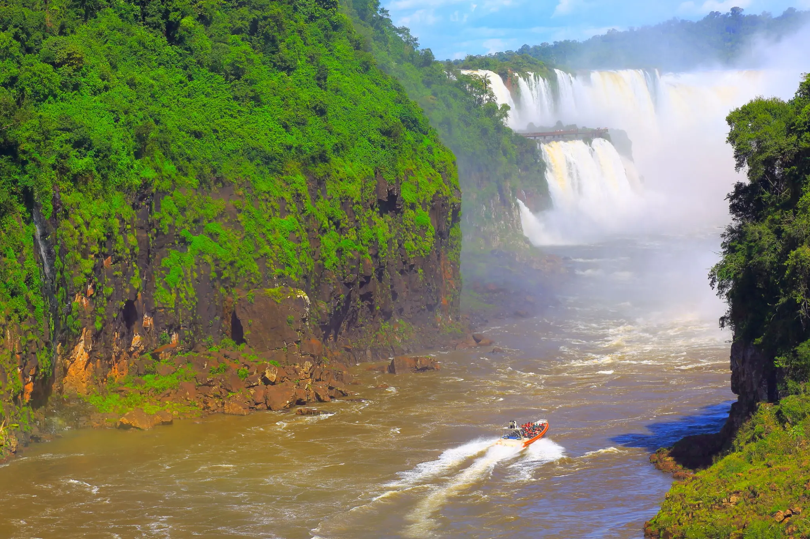
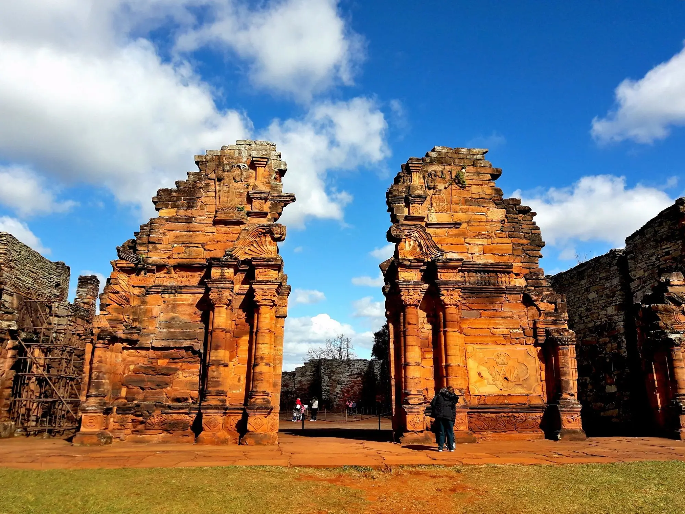
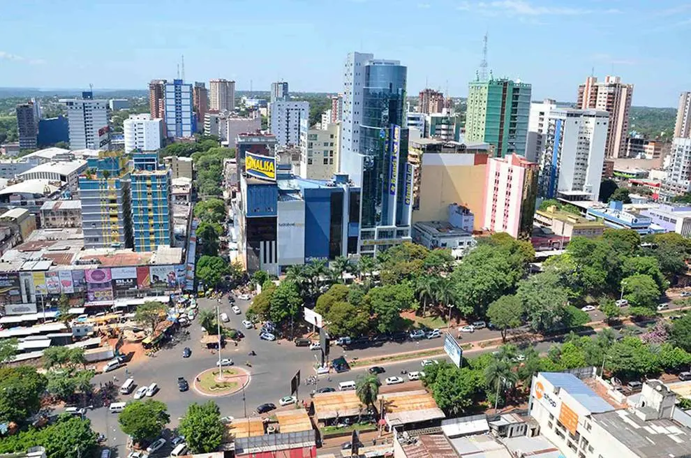

Destinos
Esto es el principio de tu aventura, puedes explorar aún más.
Descubre los mejores destinos
Explorá los lugares más impresionantes de Misiones y la región.
- Todos los Destinos
- Pto Iguazú
- Misiones
- Ciudad del Este
- Brasil









Dejanos ayudarte a planificar tu viaje perfecto
¿No sabés qué destino se ajusta a tus expectativas? Contactame y planifiquemos tu viaje.